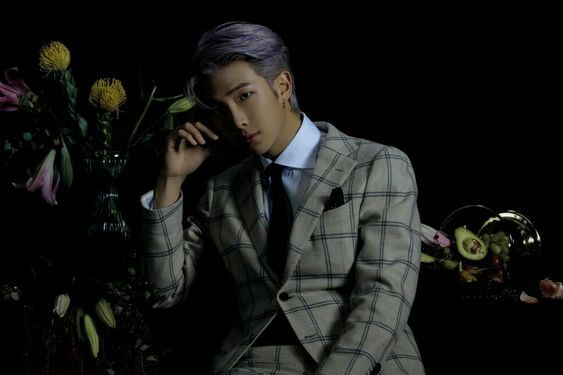
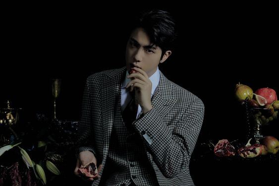
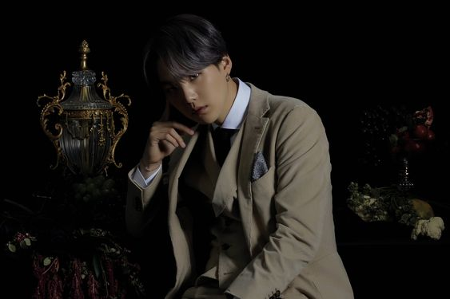
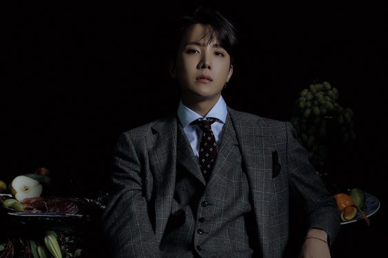
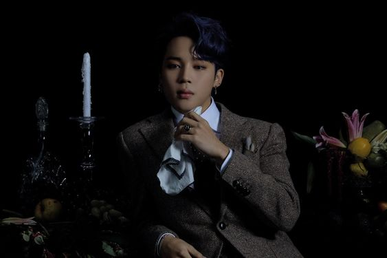
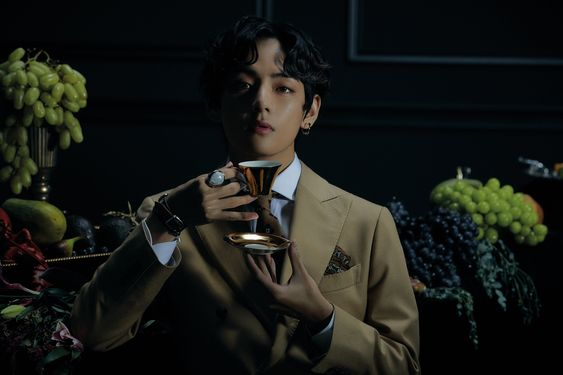
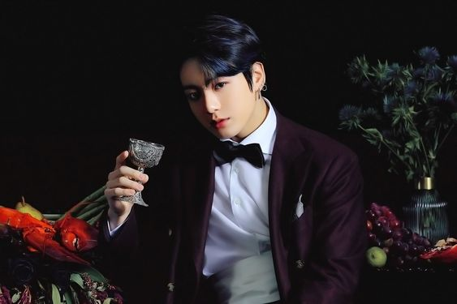

Kim Namjoon

Kim Nam-joon, atau dikenal juga sebagai RM, adalah seorang idol rapper dan penyanyi sekaligus penulis
lagu
asal Korea Selatan. Dia adalah pemimpin dan rapper utama dari boy band asal Korea Selatan yaitu
Bangtan
Boys, yang dibentuk di bawah naungan Big Hit Entertainment.
Biodata RM
-
Nama Panggung: RM, dulunya Rap Monster (랩몬스터)
-
Nama Lengkap: Kim Namjoon (김남준)
-
Ulang Tahun: 12 September 1994
-
Zodiak: Virgo
-
Tempat Lahir: Ilsan, Gyeonggi-do
-
Tinggi Badan: 181.68 cm (5’11”)
-
Berat Badan: 67 kg (147 lbs)
-
Golongan Darah: A
-
Hobi: Browsing, jalan-jalan di taman, bersepeda, fotografi, dan mendaki gunung.
-
Playlist Spotify: RM’s Heavy Rotations
Fakta RM
- Pendidikan: SMA Apgujeong; Global Cyber University – Jurusan Teknik Elektronik (S1)
- RM belajar di Selandia Baru dan menetap di sana selama 6 bulan.
- Saat ini terdaftar sebagai mahasiswa Global Cyber University.
- Sebelum debut, RM sudah sering tampil sebagai seorang underground rapper, dengan beberapa lagu
dirilis
secara informal, termasuk sebuah kolaborasi dengan Zico (Block B).
- Sangat pandai dengan IQ 148. Sebelumnya mendapat peringkat 1% teratas skala nasional di ujian
SMA nya.
- Nilai TOEIC (The Test of English for International Communication) RM: 900.
- Warna kesukaannya adalah hitam, pink, dan ungu. (Wawancara BTS untuk majalah J-14 Magazine dari
170505)
Fakta lainnya
Kim Seokjin

Jin adalah penyanyi dan penulis lagu dari Korea Selatan. Dia adalah member tertua dan vokalis dari
boygrup
di Korea Selatan, BTS. Sebagai seorang penulis lagu, dia mempunyai lima lagu terakreditasi namanya
oleh
Korea Music Copyright Association.
Biodata Jin
-
Nama Panggung: Jin (진)
-
Nama Lengkap: Kim Seok Jin (김석진)
-
Ulang Tahun: 4 Desember 1992
-
Zodiak: Sagitarius
-
Tempat Lahir: Anyang, Gyeonggi. Namun, ketika dia hampir berusia 1 tahun, keluarganya
pindah
ke Gwacheon, Gyeonggi
-
Tinggi Badan: 179 cm (5’10.5”)
-
Berat Badan: 63 kg (139 lbs)
-
Golongan Darah: O
-
Hobi: Memasak, bermain game-game Nintendo, ber-swafoto
-
Playlist Spotify: Jin’s GA CHI DEUL EUL LAE?
Fakta Jin
- Keluarganya terdiri dari: Ayah, ibu dan kakak laki-laki (Kim Seok Joong, 2 tahun lebih tua)
- Berasal dari keluarga kaya. Ayahnya adalah seorang CEO dari suatu perusahaan.
- Nama panggilan Jin: Fake Maknae, Worldwide Handsome, Eat Jin
- Pada tahun 2015, Jin dijuluki Car Door Guy (berasal dari dirinya yang keluar dari mobil dan
membuat takjub
para penggemar dengan ketampanannya).
- Jin juga dikenal sebagai si “pria nomor tiga dari kiri” (Setelah BTS berpartisipasi di Billboard
Music
Awards).
- Jin merupakan siswa pertukaran pelajar di Australia, selama masa SMP nya. Selama masa sekolah
dasar,
mata pelajaran favoritnya adalah Pelajaran Olahraga.
- Selama masa tersebut, dia suka olahraga seperti tenis, berenang atau golf (yang dia pelajari
dari ayahnya).
Fakta lainnya
Min Yoon-gi

Min Yoon-gi, lebih dikenal sebagai Suga, adalah seorang rapper, penyanyi, penulis lagu, dan produser
rekaman.
Ia adalah anggota dari grup idola pria Korea Selatan, BTS, yang dikelola oleh Big Hit Entertainment.
Biodata Suga
-
Nama Panggung: Suga (슈가)
-
Nama Lengkap: Min Yoon Gi (민윤기)
-
Ulang Tahun: 9 Maret 1993
-
Zodiak: Pisces
-
Tempat Lahir: Buk-gu, Daegu
-
Tinggi Badan: 174 cm (5’8.5″)
-
Berat Badan: 59 kg (130 lbs)
-
Golongan Darah: O
-
Hobi: Tidak melakukan apa-apa ketika punya waktu luang, berfoto, menghindari
kewajiban melakukan
suatu pekerjaan
-
Playlist Spotify: Suga’s Hip-Hop Replay
Fakta Suga
- Keluarga Suga terdiri dari ayah, ibu, dan kakak laki-laki.
- Pendidikan: Global Cyber University Jurusan Seni Liberal (S1)
- Suga mendapat nama panggungnya dari CEO Bighit karena dia pucat dan senyumnya manis (seperti
gula)
- Bertugas memperbaiki hal-hal yang dirusak oleh RM. Dia mengganti bola lampu, memperbaiki
toilet,
dll.
- Member BTS sering memanggilnya “kakek” karena dia tidur sepanjang waktu dan bisa jadi
ngambek-an.
- Nama panggilan Suga: Motionless Min karena saat libur Suga tidak melakukan apapun dan Mr.
Appendix
karena menjalani operasi usus buntu di tahun 2013 (Desember).
- Suga memilih untuk menjadi rapper setelah mendengarkan lagu Epik High yang berjudul ‘Fly’.
Fakta lainnya
Jung Hoseok

Jung Ho-seok, lebih dikenal dengan nama "J-Hope", adalah seorang rapper, penari, penyanyi, penulis
lagu,
dan produser rekaman dari Korea Selatan. Pada tahun 2013, J-Hope memulai debutnya sebagai anggota
boy
band dari Korea Selatan BTS, dikelola di bawah Big Hit Entertainment.
Biodata J-Hope
-
Nama Panggung: J-Hope (제이홉)
-
Nama Lengkap: Jung Ho Seok (정호석)
-
Ulang Tahun: February 18, 1994
-
Zodiak: Aquarius
-
Tempat Lahir: Gwangju
-
Tinggi Badan: 177 cm (5’10”)
-
Berat Badan: 65 kg (143 lbs)
-
Golongan Darah: A
-
Hobi: Mendengarkan musik dan window shopping
-
Playlist Spotify: J-Hope’s Jam
Fakta J-Hope
- Pendidikan: Gwangju Global High School; Global Cyber University
- Sebelum debut, J-hope benci melakukan aegyo, tapi sekarang dia berubah pikiran.
- J-Hope dan Zelo dari B.A.P pergi ke akademi yang sama untuk belajar rap dan dance di Gwangju.
- Sebelum debut, J-Hope menjadi bagian dari tim dance jalanan, yang bernama NEURON.
- J-Hope memenangkan underground dance battle dan bahkan tampil di suatu festival.
- Awalnya dia mengikuti audisi untuk JYP Entertainment, bareng Youngjae dari B.A.P dan Dino dari
Halo.
- Warna kesukaan: Hijau
Fakta lainnya
Park Jimin

Park Ji-min atau dikenal dengan nama panggung Jimin adalah salah satu anggota BTS atau Bangtan
Sonyeondan
yang berasal dari Korea Selatan, dengan posisi vokalis dan penari utama yang berada dibawah naungan
agensi
Big Hit Entertainment.
Biodata Jimin
-
Nama Panggung: Jimin
-
Nama Lengkap: Park Ji Min (박지민)
-
Ulang Tahun: October 13, 1995
-
Zodiak: Libra
-
Tempat Lahir: Busan
-
Tinggi Badan: 173.6cm (5’8.3″) (Dia mengatakannya bersama Jin di video mereka di aplikasi
V live
pada bulan Desember)
-
Berat Badan: 61 kg (134 lbs)
-
Golongan Darah: A
-
Hobi: Bersantai kapanpun dia mendapat kesempatan
-
Playlist Spotify: Jimin’s JOAH? JOAH!
Fakta Jimin
- Keluarga Jimin terdiri dari ayah, ibu, dan adik laki-laki.
- Pendidikan: Busan High School of Arts; Global Cyber University
- Sebelum debut, Jimin masuk ke Busan High School of Arts sebagai siswa top dalam tarian modern,
tapi kemudian
pindah ke Korea Arts High School dengan V.
- Jimin adalah pembaca pidato perpisahan di tahun-tahun pra-debutnya (Siswa peringkat teratas
alias si
no. 1) dan dia juga jadi ketua kelas selama 9 tahun.
- Jimin mulai tertarik dengan dunia tarik suara setelah menonton penampilan Rain.
- Jimin serta Woojin dan Daniel dari Wanna One berpartisipasi (berturut-turut) dalam sebuah
kompetisi dance
di Busan “2011 Busan City Kids Vol. 2”. Tim Jimin mengalahkan tim Woojin di babak semifinal,
sedangkan
di babak final, tim Jimin menghadapi tim Daniel.
- Paling pede dengan matanya.
Fakta lainnya
Kim Taehyung

Kim Tae-hyung lebih dikenal dengan nama panggungnya V, adalah penyanyi, penulis lagu, dan aktor asal
Korea
Selatan. Ia merupakan anggota dari grup vokal pria Korea Selatan BTS.
Biodata V
-
Nama Panggung: V (뷔)
-
Nama Lengkap: Kim Tae Hyung (김태형)
-
Ulang Tahun: December 30, 1995
-
Zodiak: Capricorn
-
Tempat Lahir: Daegu
-
Tinggi Badan: 178 cm (5’10″)
-
Berat Badan: 62 kg (137 lbs)
-
Golongan Darah: AB
-
Hobi: Mencari musik yang tidak didengarkan oleh siapapun, main komputer
-
Playlist Spotify: V’s Join Me
Fakta V
- Pendidikan: Sekolah Seni Korea (Korea Art School); Global Cyber University
- V lancar berbicara dalam bahasa Jepang.
- Warna favoritnya adalah abu-abu. (Menurut wawancara BTS untuk Majalah J-14 Magazine dari 170505)
- Nomor favoritnya 10.
- Barang-barang kesukaan V: komputernya, boneka-boneka besar, pakaian, sepatu, aksesoris, dan
semua hal
yang unik.
- Nama panggilan V: TaeTae (Teman-temannya memanggil V “TaeTae~” karena mudah diucapkan), Blank
Tae (karena
V selalu memasang ekspresi kosong) dan CGV (karena visual V luar biasa sempurna seperti karakter
game komputer)
- Kim Taehyung memiliki kelopak mata monolid di satu mata and kelopak mata ganda di mata yang
lain.
Fakta lainnya
Jeon Jungkook

Jeon Jeong-guk atau dikenal dengan nama panggung Jungkook adalah seorang penyanyi dan anggota boy
band Korea
Selatan yaitu BTS atau Bangtan Boys, atau bisa juga disebut Beyond The Scene, yang dibentuk di bawah
naungan Big Hit Entertainment pada tahun 2013.
Biodata Jungkook
-
Nama Panggung: Jungkook (정국)
-
Nama Lengkap: Jeon Jeong-guk (Hangul: 전정국)
-
Ulang Tahun: 1 September 1997
-
Zodiak: Virgo
-
Tempat Lahir: Busan, Korea Selatan
-
Tinggi Badan: 178 cm (5’10”)
-
Berat Badan: 66 kg (145 lbs)
-
Golongan Darah: A
-
Hobi: Menggambar
-
Playlist Spotify: Jungkook: I am Listening to it Right Now
Fakta Jungkook
- Keluarga Jungkook terdiri dari ibu, ayah, dan kakak laki-laki
- Pendidikan: Sekolah Seni Pertunjukan Seoul; Global Cyber University
- Jungkook bersekolah di Sekolah Seni Pertunjukan Seoul, lulus bulan Februari 2017.
- Punya kakak laki-laki bernama Jung Hyun.
- Warna kesukaannya adalah hitam. (Run BTS Ep. 39)
- Suka main games, menggambar, dan main sepak bola.
- Punya kebiasaan aneh yaitu suka mengendus, karena rhinitis-nya. Dia juga sering
menggeliat-geliatkan
jarinya.
Fakta lainnya